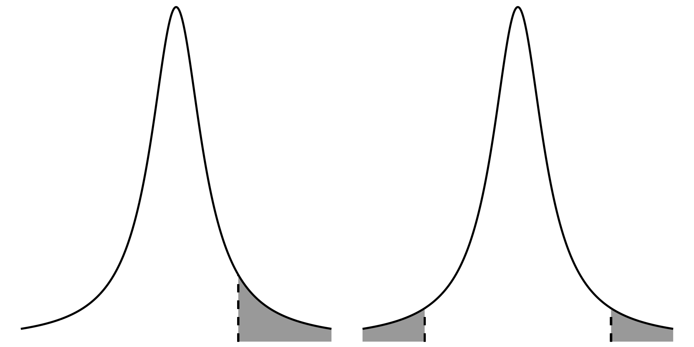
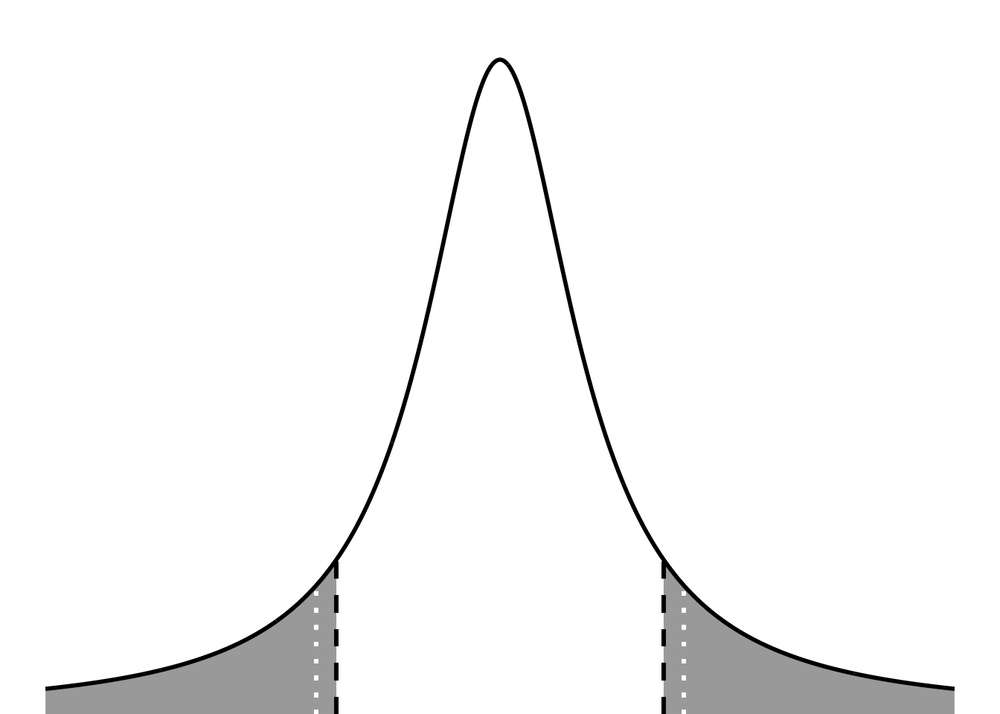
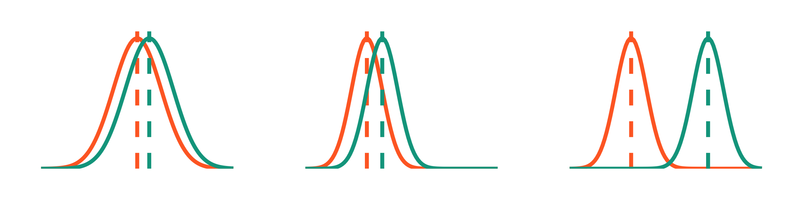
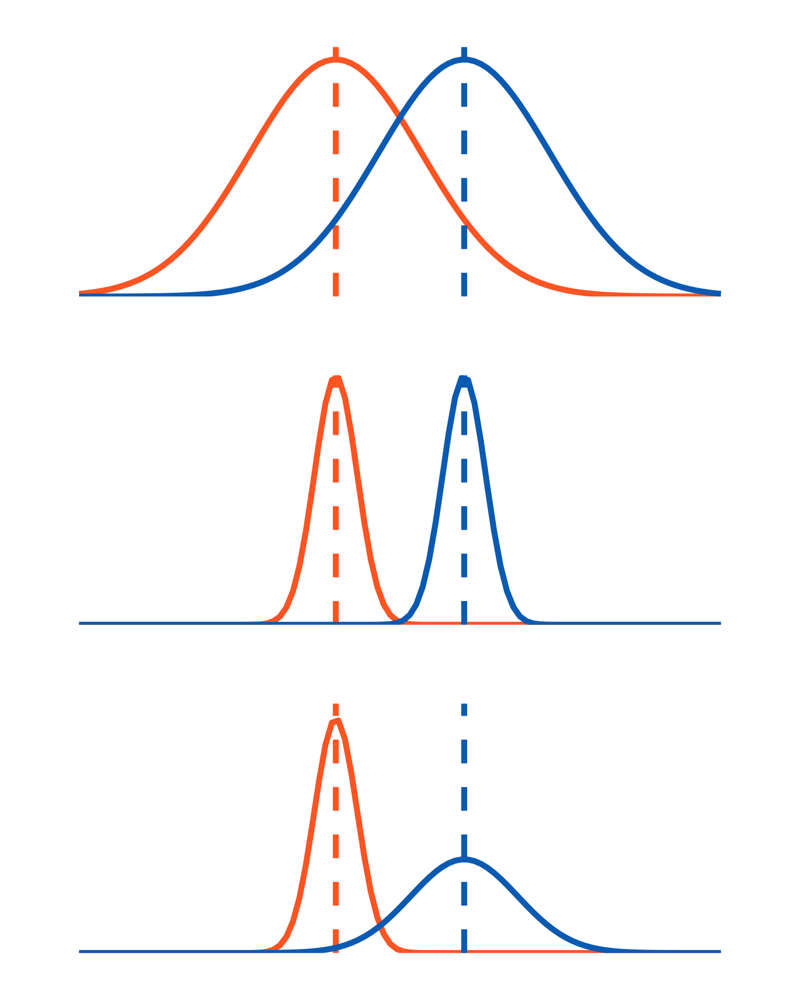

two <-ggplot(data.frame(x =-5:5), aes(x)) +stat_function(geom ="area", fun = dt, args =list(df =1), xlim =c(3, 5), fill ="darkgrey") +geom_linerange(aes(x =3, ymin =0, ymax =0.032), linewidth =1, lty =2, color ="#000000") +stat_function(geom ="area", fun = dt, args =list(df =1), xlim =c(-5, -3), fill ="darkgrey") +geom_linerange(aes(x =-3, ymin =0, ymax =0.032), linewidth =1, lty =2, color ="#000000") +stat_function(geom ="line", n =1000, fun = dt, args =list(df =1), linewidth =1, color ="#000000") +scale_y_continuous(expand =c(0, 0), limits =c(0, 0.32)) +theme_void() +theme(panel.grid =element_blank())one <-ggplot(data.frame(x =-5:5), aes(x)) +stat_function(geom ="area", fun = dt, args =list(df =1), xlim =c(2, 5), fill ="darkgrey") +geom_linerange(aes(x =2, ymin =0, ymax =0.063), linewidth =1, lty =2, color ="#000000") +stat_function(geom ="line", n =1000, fun = dt, args =list(df =1), linewidth =1, color ="#000000") +scale_y_continuous(expand =c(0, 0), limits =c(0, 0.32)) +theme_void() +theme(panel.grid =element_blank())one + two

calculating a critical value
Code
qt(p =0.05/2, df =19)
[1] -2.093024
calculating t-score
Code
# population meanmu0 <-2# number of observationsn <-20# sample meanybar <-mean(leaves)# sample standard deviations <-sd(leaves)# sample standard errorse <- s/sqrt(n)# degrees of freedomdf <- n -1# t-scoret <- (ybar-mu0)/set
\[
SE = \frac{s}{\sqrt{n}} = \frac{0.371}{4.47} = 0.08
\]
visual representation of sample t-statistic vs t-critical
Code
ggplot(data.frame(x =-5:5), aes(x)) +stat_function(geom ="area", fun = dt, args =list(df =1), xlim =c(1.8, 5), fill ="darkgrey") +stat_function(geom ="area", fun = dt, args =list(df =1), xlim =c(-5, -1.8), fill ="darkgrey") +geom_linerange(aes(x =1.8, ymin =0, ymax =0.075), linewidth =1, lty =2, color ="#000000") +geom_linerange(aes(x =-1.8, ymin =0, ymax =0.075), linewidth =1, lty =2, color ="#000000") +geom_linerange(aes(x =2.021, ymin =0, ymax =0.075), linewidth =1, lty =3, color ="#FFFFFF") +geom_linerange(aes(x =-2.021, ymin =0, ymax =0.075), linewidth =1, lty =3, color ="#FFFFFF") +stat_function(geom ="line", n =1000, fun = dt, args =list(df =1), linewidth =1, color ="#000000") +scale_y_continuous(expand =c(0, 0), limits =c(0, 0.32)) +theme_void() +theme(panel.grid =element_blank(),plot.margin =unit(c(1, 0, 0, 0), "cm"))

manually calculating p-value
Code
# two-tailed: multiply probability by 2# lower = FALSE: probability of the value being more than t2*pt(t, df, lower =FALSE)
doing a t-test
Code
t.test(leaves, mu =0)
8. two-sample t-test
Code
ex1 <-ggplot(data.frame(x =-8:8), aes(x)) +stat_function(geom ="line", n =100, fun = dnorm, args =list(mean =0, sd =2), linewidth =2, color ="#FF6B2B") +geom_vline(aes(xintercept =0), color ="#FF6B2B", lty =2, linewidth =2) +stat_function(geom ="line", n =100, fun = dnorm, args =list(mean =1, sd =2), linewidth =2, color ="#00A38D") +geom_vline(aes(xintercept =1), color ="#00A38D", lty =2, linewidth =2) +scale_y_continuous(expand =c(0, 0), limits =c(0, 0.21)) +theme_void() +theme(plot.margin =unit(c(1, 1, 1, 1), "cm"))set.seed(2)x <-rnorm(30, mean =0, sd =2)y <-rnorm(30, mean =1, sd =2)t.test(x = x, y = y, var.equal =TRUE)
Two Sample t-test
data: x and y
t = -0.78852, df = 58, p-value = 0.4336
alternative hypothesis: true difference in means is not equal to 0
95 percent confidence interval:
-1.6721807 0.7270662
sample estimates:
mean of x mean of y
0.4573436 0.9299009
Code
# 0.43
Code
ex2 <-ggplot(data.frame(x =-8:17), aes(x)) +stat_function(geom ="line", n =100, fun = dnorm, args =list(mean =0, sd =2), linewidth =2, color ="#FF6B2B") +geom_vline(aes(xintercept =0), color ="#FF6B2B", lty =2, linewidth =2) +stat_function(geom ="line", n =100, fun = dnorm, args =list(mean =2, sd =2), linewidth =2, color ="#00A38D") +geom_vline(aes(xintercept =2), color ="#00A38D", lty =2, linewidth =2) +scale_y_continuous(expand =c(0, 0), limits =c(0, 0.21)) +theme_void() +theme(plot.margin =unit(c(1, 1, 1, 1), "cm"))set.seed(1000000000)x <-rnorm(30, mean =0, sd =2)y <-rnorm(30, mean =2, sd =2)t.test(x = x, y = y, var.equal =TRUE)
Two Sample t-test
data: x and y
t = -3.7904, df = 58, p-value = 0.0003603
alternative hypothesis: true difference in means is not equal to 0
95 percent confidence interval:
-2.7905631 -0.8617609
sample estimates:
mean of x mean of y
0.1435745 1.9697364
Code
# 0.6932
Code
ex3 <-ggplot(data.frame(x =-8:17), aes(x)) +stat_function(geom ="line", n =100, fun = dnorm, args =list(mean =0, sd =2), linewidth =2, color ="#FF6B2B") +geom_vline(aes(xintercept =0), color ="#FF6B2B", lty =2, linewidth =2) +stat_function(geom ="line", n =100, fun = dnorm, args =list(mean =10, sd =2), linewidth =2, color ="#00A38D") +geom_vline(aes(xintercept =10), color ="#00A38D", lty =2, linewidth =2) +scale_y_continuous(expand =c(0, 0), limits =c(0, 0.21)) +theme_void() +theme(plot.margin =unit(c(1, 1, 1, 1), "cm"))set.seed(100)x <-rnorm(40, mean =0, sd =2)y <-rnorm(40, mean =10, sd =2)t.test(x = x, y = y, var.equal =TRUE)
Two Sample t-test
data: x and y
t = -21.69, df = 78, p-value < 2.2e-16
alternative hypothesis: true difference in means is not equal to 0
95 percent confidence interval:
-10.564878 -8.788488
sample estimates:
mean of x mean of y
0.2003543 9.8770375
Code
# p < 0.001
Code
ex1 + ex2 + ex3

same differences in means, different SD
Code
small <-ggplot(data.frame(x =-6:9), aes(x)) +stat_function(geom ="line", n =100, fun = dnorm, args =list(mean =0, sd =2), linewidth =2, color ="#FF6B2B") +geom_vline(aes(xintercept =0), color ="#FF6B2B", lty =2, linewidth =2) +stat_function(geom ="line", n =100, fun = dnorm, args =list(mean =3, sd =2), linewidth =2, color ="#0070C0") +geom_vline(aes(xintercept =3), color ="#0070C0", lty =2, linewidth =2) +scale_y_continuous(expand =c(0, 0), limits =c(0, 0.21)) +theme_void() +theme(plot.margin =unit(c(1, 1, 1, 1), "cm"))big <-ggplot(data.frame(x =-6:9), aes(x)) +stat_function(geom ="line", n =100, fun = dnorm, args =list(mean =0, sd =0.5), linewidth =2, color ="#FF6B2B") +geom_vline(aes(xintercept =0), color ="#FF6B2B", lty =2, linewidth =2) +stat_function(geom ="line", n =100, fun = dnorm, args =list(mean =3, sd =0.5), linewidth =2, color ="#0070C0") +geom_vline(aes(xintercept =3), color ="#0070C0", lty =2, linewidth =2) +scale_y_continuous(expand =c(0, 0), limits =c(0, 0.8)) +theme_void() +theme(plot.margin =unit(c(1, 1, 1, 1), "cm"))diff <-ggplot(data.frame(x =-6:9), aes(x)) +stat_function(geom ="line", n =100, fun = dnorm, args =list(mean =0, sd =0.5), linewidth =2, color ="#FF6B2B") +geom_vline(aes(xintercept =0), color ="#FF6B2B", lty =2, linewidth =2) +stat_function(geom ="line", n =100, fun = dnorm, args =list(mean =3, sd =1.25), linewidth =2, color ="#0070C0") +geom_vline(aes(xintercept =3), color ="#0070C0", lty =2, linewidth =2) +scale_y_continuous(expand =c(0, 0), limits =c(0, 0.85)) +theme_void() +theme(plot.margin =unit(c(1, 1, 1, 1), "cm"))small / big / diff

testing test statistic formula to compare against t-test from above: